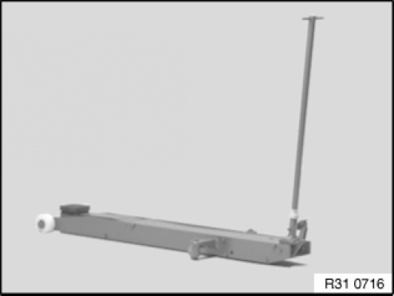
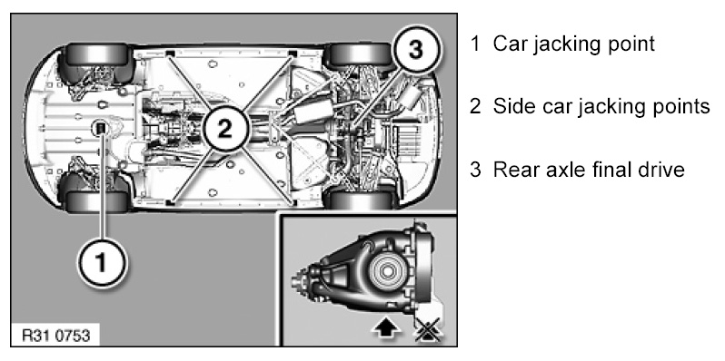
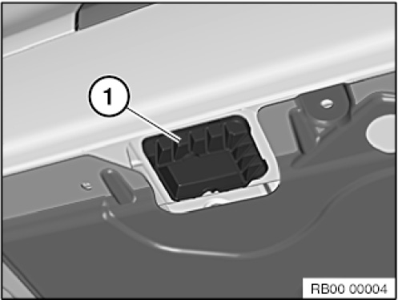

Differential Assembly: Service Precautions
00 .. ... Raising vehicle with trolley jack

Observe the following trolley-jack-related instructions:
1. Only trolley jacks sold or approved by BMW, with a rubber plate on their mounting, may be used.
2. Trolley jacks must be regularly serviced and always checked for functional reliability before they are used.
3. Check the rubber plate on the trolley jack prior to each use, replacing if necessary.

WARNING: The vehicle may be raised with a trolley jack only at the following mounting point.
1 Car jacking point
2 Side car jacking points
3 Rear axle final drive
NOTE: It is not permitted to raise the vehicle at the rear differential cover.

Risk of damage.
Jacking point (1) must be present.
Align the rubber plate on the trolley jack to the jacking point (1) in such a way that there is no contact to adjacent components and that they are therefore not damaged.